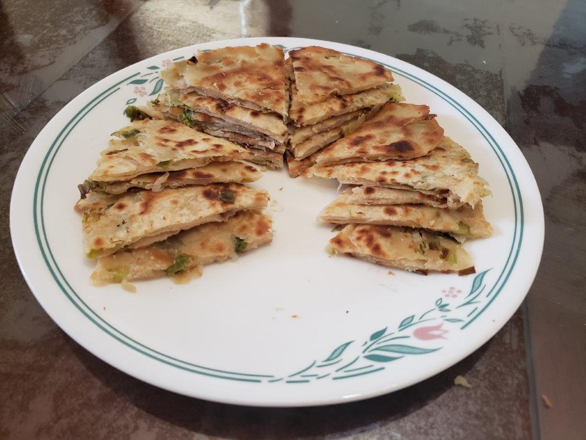

Cong You Bing (Scallion Pancakes)

Ingredients:
- 2 cups Flour
- 1/2 cup Boiling water
- 1/4 Room-temperature water
- 1/2 tsp Salt
- 1/4 cup + 2 tbsp flour
- 1/4 cup Sesame oil
- 3/4 tsp Salt
- 2 bunches Scallions, finely chopped
- Vegetable oil, for frying
Instructions:
- Combine the 2 cups flour and 1/2 tsp salt in a big bowl. Slowly drizzle in the hot water while mixing it with a pair of chopsticks, until the water is fully absorbed. Slowly drizzle in the cool water and continue to stir. Knead until a firm ball is formed, about 5 minutes. Cover and let rest for 20 minutes.
- While the dough is resting, combine the rest of the flour, the rest of the salt, and the sesame oil into a bowl.
- After the dough has rested, knead the dough for another minute. Cut the dough into 6 even pieces.
- With a rolling pin, roll one segment of the dough into a 6x10 inch rectangle. Lift and turn the dough regularly while rolling it to prevent it from sticking. Spoon 1 tbsp of the oil mixture onto the dough and spread it evenly along the dough, leaving 1 inch on the top and left lip to save room for sealing the dough later. Sprinkle scallions over the oil mixture, focusing more on the bottom and right sides, opposite of the empty space left earlier.
- Roll the dough lengthwise, starting from the area with a large concentration of scallions, creating a tube. Starting from the end with more green onions and with the seam side inwards, roll the tube into itself to make a spiral pattern. Tuck the loose end under the bun.
- Set the pancake aside and cover with plastic wrap. Repeat with the rest of the dough segments.
- Flatten each pancake into a 7-8 inch circle. It is alright for some scallions to fall out.
- In a pan over meadium heat, heat enough oil for a very shallow pool of oil, about 1/4 of the height of a pancake. Place the pancake into the pan and cover. Let cook for one minute. Flip and cover again and cook for another minute. Remove cover and cook for another 3 minutes, flipping regularly. Remove from pan and repeat with other pancakes.
- Once the pancakes have cooled, cut into 6 pieces and serve.